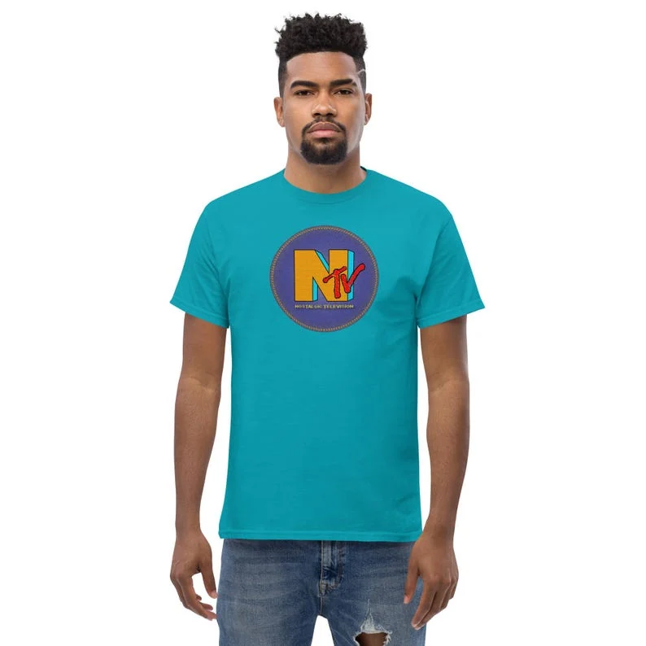
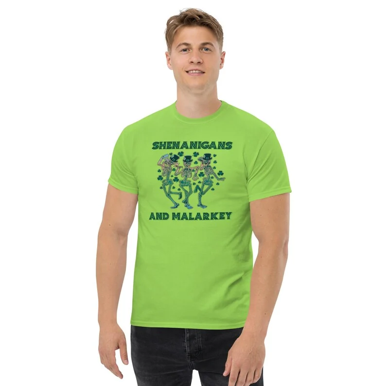
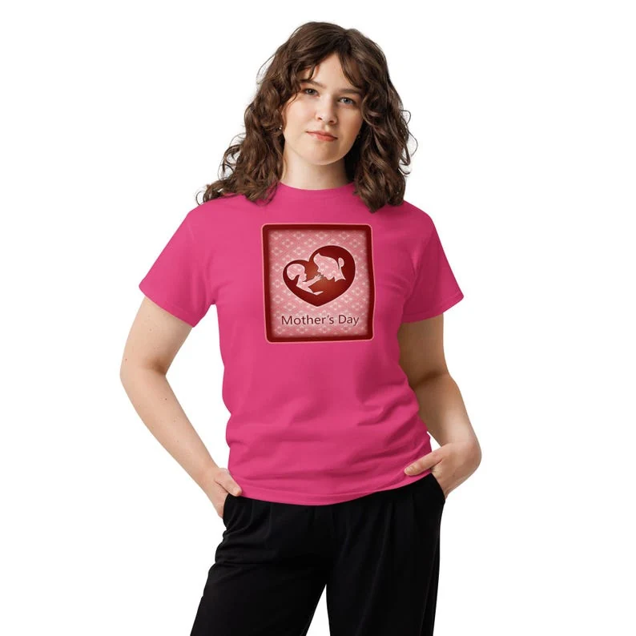
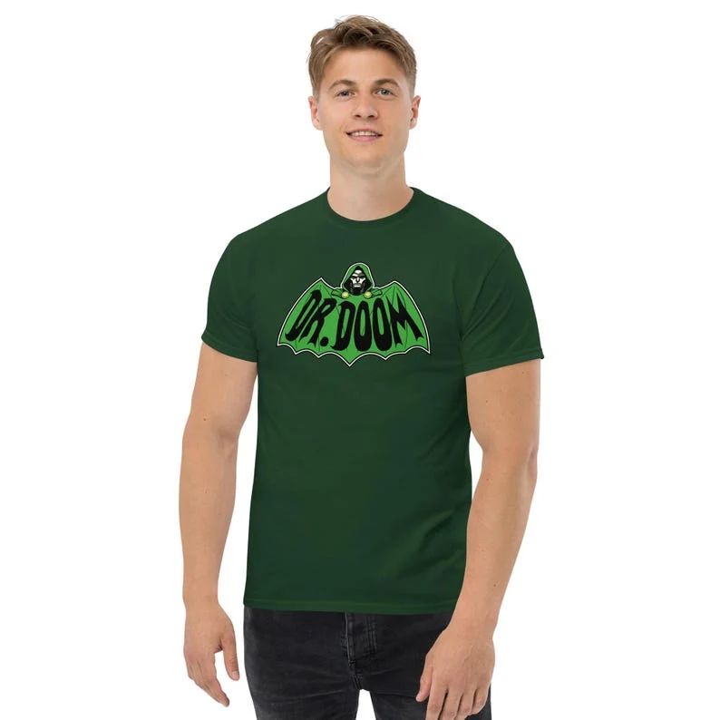
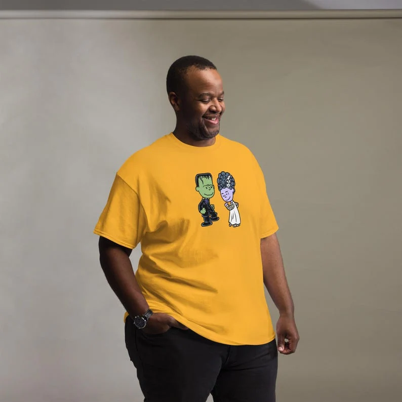

Graphic tees

Graphic tees / Nino Battaglia
Dancing skeletons among clovers between SHENANIGANS and AND MALARKEY in green.
From $25
Printed to order on the Gildan 5000 heavy cotton tee — classic unisex fit. Sizing & care · Delivery

Graphic tees

Graphic tees

Graphic tees

Graphic tees